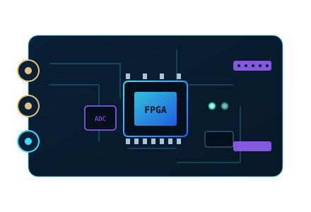
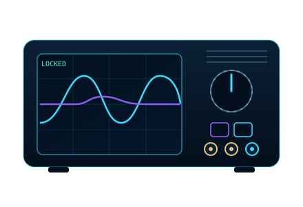

Quantum Metrology & Optical Sensing
Hold interferometric optical sensors at their lowest-uncertainty operating point for quantum-grade measurement stability — the same photons and time, a smaller error bar.
Read Metrology 101 →The platform
A precision instrument that is merely locked is not necessarily optimized. PQSensing builds a family of supervisory modules — a firmware layer that runs alongside the lock you already have and holds the instrument at the operating point where its measurement is cleanest. One discipline, many instrument classes.
What a supervisory module does
Every supervisory module shares the same job: continuously hold a precision instrument at the operating point that produces the cleanest, most usable measurement — automatically, while your existing lock keeps the device captured.
Turn the same signal and the same integration time into less measurement uncertainty.
Hold the best operating point through vibration, thermal drift, and disturbance, so long averages keep helping.
Runs above the lock you already use — no rip-and-replace, no new optics required.
The module family
Each module is tuned to the figure of merit that matters for its instrument class. The quantum-metrology module is the flagship and most developed; the others are on the roadmap as the family extends.
Hold interferometric optical sensors at their lowest-uncertainty operating point for quantum-grade measurement stability — the same photons and time, a smaller error bar.
Read Metrology 101 →Keep rotation and inertial sensors at their steadiest, lowest-drift operating point for more dependable navigation-grade output, including where GPS is unavailable.
Hold ultrastable lasers and clock references at their quietest condition, layered above the precision locks they already run.
Keep the physical layer of quantum and coherent optical links regulated for cleaner, more reliable channels.
A research-grade supervisory layer for large interferometers and precision-optics collaborations — a validation and credibility track for the whole family.
See Metrology 201 →Modules share a common engineering core, so each new instrument class extends the line rather than starting over.
Delivery
Modules ship as firmware for standard FPGA-based laboratory instruments — no custom hardware required. Prototype on accessible benchtop hardware, then scale to production-grade instruments, deployed alongside the lock-in, PID, and lock-box instruments already on the box.


Packaged to run as a native instrument on the Moku platform, alongside its existing lock and control instruments.
A low-cost reference and academic platform for prototyping, validation, and classroom-scale deployments.
Available as licensed technology or as PQSensing-branded firmware, depending on the partner and the program.
PQSensing protects the methods behind these modules as intellectual property. This page describes what the modules achieve and where they run; it intentionally omits the underlying control techniques.